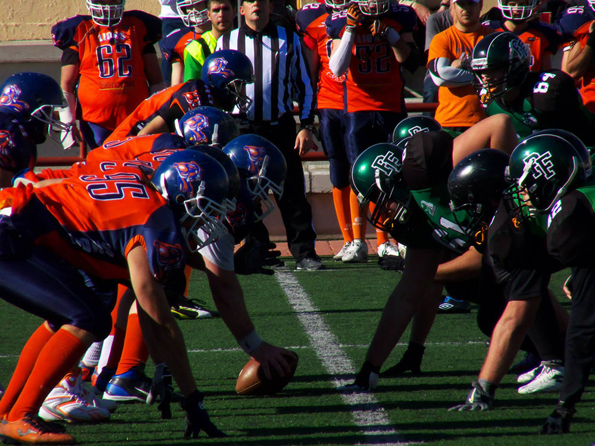
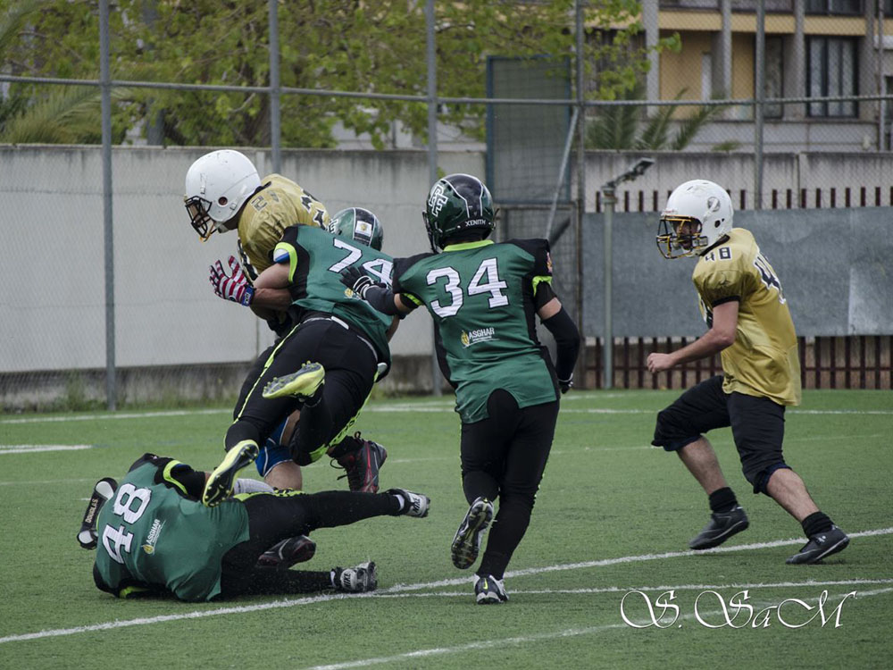
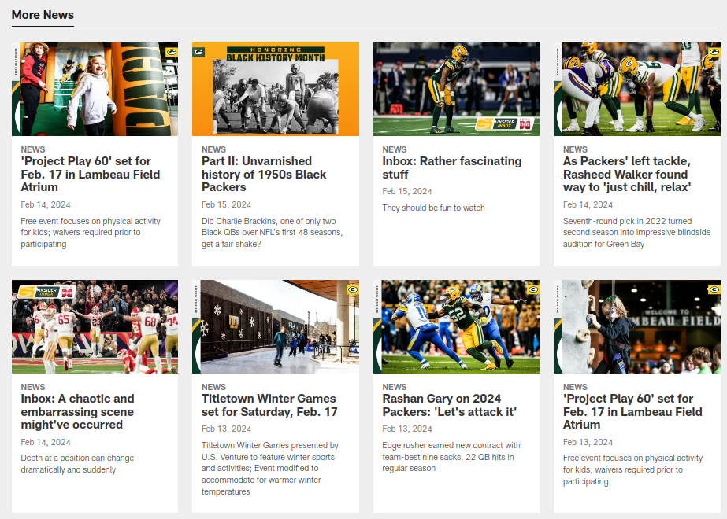

<div class="flex-container">
  <main>
    <div class="next-mach">
      <div class="next-mach_date">
        <p>
          SEMANA 11
          <span class="fecha-hora">• DOM 11/19 • 12:00 PM GMT+1</span>
        </p>
      </div>
      <div class="next-mach_visiting">
        
        <div class="next-mach_visiting_info">
          <h2 id="Visiting_team">MALAGA CORSAIRS</h2>
          <span>4-5</span>
        </div>
      </div>
      <div class="next-mach_home">
        <div class="next-mach_home_info">
          <h2 id="Home_team">FUENGIROLA POTROS</h2>
          <span>3-6</span>
        </div>
        
      </div>
      <div class="next-mach_home"></div>
      <div class="next-mach_socialmedia">
        <a target="_blank" href="https://www.youtube.com/@fefa_spain/streams">
          
          <span>LIVE YT</span>
        </a>
      </div>
      <div class="next-mach_buttons">
        <a target="_blank" href="https://www.twitch.tv/100yardas">
          <button class="button-class11 button-size">Ver en Twitch</button>
        </a>
        <a href="../../../assets/pages/entradas.html">
          <button class="button-class21 button-size">Comprar Entradas</button>
        </a>
        <a href="../../../assets/pages/socios.html">
          <button class="button-class31 button-size">+ Información</button>
        </a>
      </div>
    </div>

    <div class="carousel-container">
      <div class="carousel">
        <!-- LAS IMAGENES DEBEN SER TODAS DEL MISMO TAMAÑO. EN ESTE CASO SON DE 1000x750 px -->
        <div class="slide">
          
          <h3>Esto comienza!</h3>
          <p>
            La temporada comienza con un importante encuentro entre Granada
            Lions y Fuengirola Potros, los favoritos para esta nueva temporada.
          </p>
        </div>
        <div class="slide">
          
          <h3>
            El ataque de los Potros más afilado que nunca. Carreras de más de 20
            yardas
          </h3>
          <p></p>
        </div>
        <div class="slide">
          
          <h3>La defensa reacciona tras un sólido ataque de los Lions</h3>
          <p>
            El linebacker con dorsal 48 de Fuengirola Potros es un seguro de
            vida. Partido a partido está demostrando una gran solidez defensiva
            y se posiciona alto en el draft para la selección de Panamá.
          </p>
        </div>
        <div class="slide">
          
          <h3>
            Clase de Fuengirola Potros:
            <br />
            Los partidos se ganan en defensa
          </h3>
          <p>
            Aunque parecía que se quedaban atrás frente a un contundente ataque,
            terminaron apareciendo las ayudas defensivas y con ella la victoria
            para Fuengirola Potros. Gran comienzo de temporada.
          </p>
        </div>
      </div>
      <div class="nav-buttons">
        <div class="arrow left-arrow">&lt;</div>
        <div class="counter">
          <span
            class="dot active"
            style="background-color: rgb(250, 180, 30)"
          ></span>
          <span class="dot"></span>
          <span class="dot"></span>
          <span class="dot"></span>
        </div>
        <div class="arrow right-arrow">&gt;</div>
      </div>
    </div>

    <script src="../../../assets/js/carousel.js"></script>

    <!-- MODIFICAR -->
    <div>
      <p>(Mockup)</p>
      <hr />
      
      <p>
        La idea es vincular un blog con esta zona de la web de tal manera que
        funcione parecido a un sistema de gestión de contenidos (CMS).

        <br />
        De esa manera tendría el contenido de la noticia, y con la API de
        Instagram vincularle algunas imagenes genéricas llamativas.
      </p>
    </div>

    <hr />

    <br /><br />
    <section>
      <h3>¿Quieres ver más contenido?</h3>
      <button class="button-class21 button-size">
        <a routerLink="/socios">Socios</a>
      </button>
    </section>
  </main>
</div>
